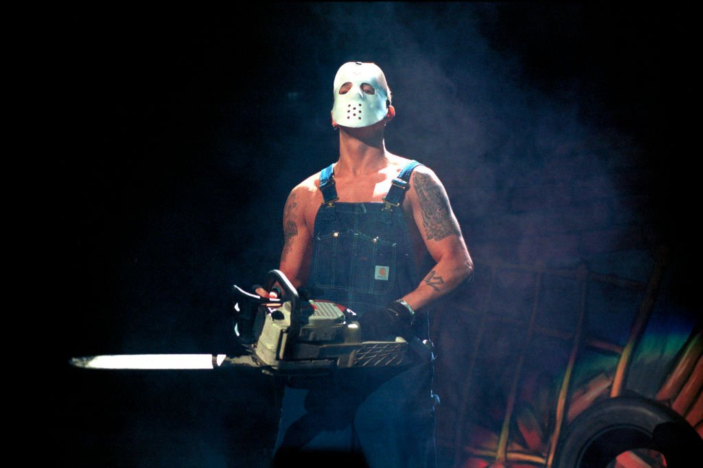
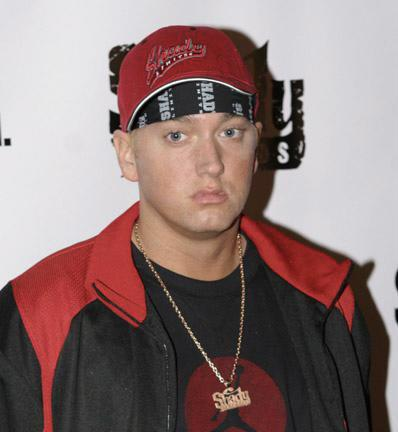
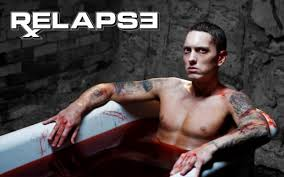
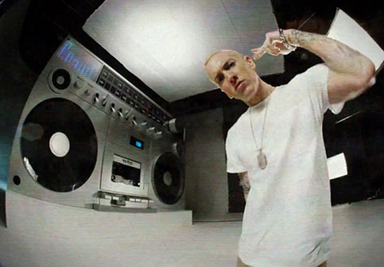
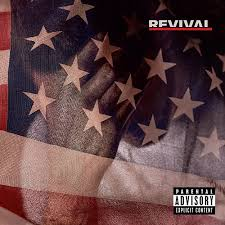
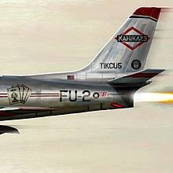
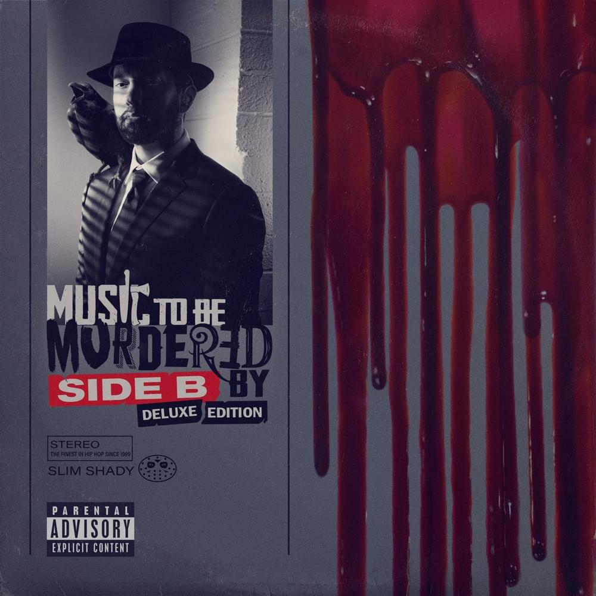
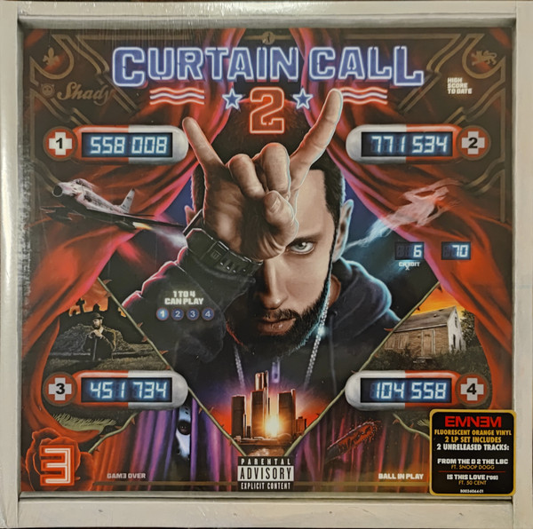
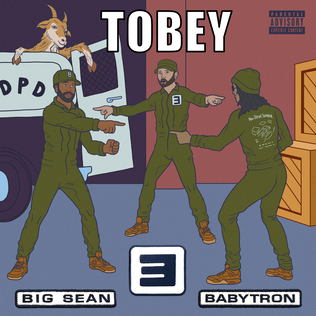
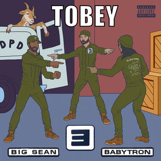

Eminem
Информация
• Имя при рождении: Lesane Parish Crooks
• Дата рождения: 16 июня 1971
• Дата смерти: Дата смерти 13 сентября 1996(25 лет)
• Лейблы: Death Row Records, Interscope Records и Amaru Entertainment
Псевдонимы:
• Slim Shady
• Ken Kaniff
• Evil
Навигация

Track 1
Artist 1
Эминем настоящее имя — Маршалл Брюс Мэтерс III — американский рэпер, музыкальный продюсер, композитор и актёр. Помимо сольной карьеры состоял в группе D12 и хип-хоп-дуэте Bad Meets Evil. Является одним из самых продаваемых музыкальных артистов в мире, а также самым продаваемым артистом 2000-х годов. Он назван одним из самых великих музыкантов всех времён многими журналами, включая Rolling Stone, который разместил Эминема под 83-м номером в списке 100 самых великих артистов, а также на 91-м месте в списке 100 величайших авторов песен всех времён. Этот же журнал провозгласил его Королём хип-хопа. Если считать и студийные работы его групп, то у Эминема имеется 13 альбомов, которые достигали первой строчки в Billboard 200. Как сольный артист Эминем продал более 100 миллионов альбомов по всему миру и более 107 миллионов своих записей и 44 миллиона копий своих альбомов только в Америке.
Первая популярность и альтер эго:
После выпуска альбома Эминем был обвинён рэпером из Нью-Йорка Cage в копировании стиля, так как альтер эго «Slim Shady» рассказывает о чрезмерном насилии, а Cage уже делал подобное ранее в своей песне «Agent Orange». Некоторые слушатели также заметили, что стили обоих очень схожи, эти обстоятельства привели к вражде между рэперами.
После того, как Эминема выселили из дома, он отправился в Лос-Анджелес, чтобы поучаствовать в Rap Olympics 1997 года, ежегодном состязании по рэпу. Он занял второе место. В этом мероприятии присутствовали сотрудники лейбла Interscope Records, Эминем отдал им свою кассету с Slim Shady EP. Они отправили её генеральному директору лейбла, Джимми Айовину. Dr. Dre, продюсер и основатель лейбла Aftermath Entertainment, вспоминал: «За всю свою карьеру я ни разу не находил чего-либо интересного на демозаписях. Когда Джимми слушал эту кассету, я сказал: „Найдите мне его. Сейчас же“».
23 февраля 1999 года Эминем выпустил The Slim Shady LP на лейблах Interscope и Aftermath Entertainment. Это был один из самых популярных альбомов года (к концу года альбом был сертифицирован в трёхкратную платину), но его популярность сопровождалась спорами по поводу текстов песен: например в песне «’97 Bonnie & Clyde» Эминем описывает поездку со своей маленькой дочкой, в ходе которой они избавляются от трупа своей жены. Песня «Guilty Conscience» побуждает человека убить свою жену и её любовника. Эта песня стала началом дуэта Dr. Dre и Эминема. Практически в каждом альбоме присутствует хотя бы одна песня с этим дуэтом.
Всемирная известность: The Marshall Mathers LP и The Eminem Show
Между первым и вторым альбомами Эминем успел отметиться сразу в двух треках альбома Dr. Dre 2001 — «What’s The Difference» и «Forgot About Dre». 23 мая 2000 года Эминем выпускает свой третий альбом The Marshall Mathers LP. Продажи альбома в первую неделю составили 1,76 миллионов копий, установив два рекорда: The Marshall Mathers LP стал самым быстрораспродавемым рэп-альбомом в мире и самым быстрораспродаваемым сольным альбомом.
Первый сингл из альбома «The Real Slim Shady» имел оглушительный успех, несмотря на оскорбительные заявления о знаменитостях (например, Эминем заявил, что Кристина Агилера занималась оральным сексом с Фредом Дёрстом). Во втором сингле «The Way I Am» он читает про давление со стороны фанатов. Песня также примечательна тем, что она связана с Мэрилином Мэнсоном: он упоминается в песне, появляется в видеоклипе и исполнил припев ремикс-версии «The Way I Am».  В третьем сингле «Stan» Эминем пытается справиться со своей славой, принимая образ сумасшедшего фаната Стэна, который убивает себя и свою беременную девушку. Журнал Q назвал её третьей величайшей рэп-песней всех времён, а Rolling Stone поставил «Stan» на 296-ое место в списке 500 величайших песен всех времён по версии журнала Rolling Stone. В июле 2000 года Эминем стал первым белым рэпером, появившийся на обложке журнала The Source. В марте 2011 года альбом получил «бриллиантовый» статус RIAA. Общий объём продаж составил 32 миллиона копий по всему миру. На 43-ей церемонии награждения премии Грэмми Эминем исполнил песню «Stan» вместе с Элтоном Джоном в 2001 году. Выступление было ответом на обвинения в гомофобии со стороны GLAAD. Журнал Entertainment Weekly назвал их выступление одним из лучших за десятилетие. В момент церемонии, GLAAD провела акцию протеста возле Staples Center (именно там проводилось награждение). В том же году Эминем появился в туре Up in Smoke Tour вместе с рэперами Dr. Dre, Snoop Dogg, Xzibit и Ice Cube.
26 мая 2002 года Эминем выпускает свой четвёртый альбом The Eminem Show. Как и предыдущий релиз, The Eminem Show стал успешным: альбом достиг первого места в чартах с
продажами более 1,332 миллиона копий за первую неделю. В главном сингле альбома,  «Without Me», Маршалл высмеивает Элвиса Пресли, Limp Bizkit, Moby и многих других
исполнителей. Как и предыдущий альбом, The Eminem Show в 2011 году получил «бриллиантовый статус RIAA». В этом альбоме Эминем рассказывает про свои отношения с женой и
дочерью, о своём статусе в хип-хопе, про нападение в 2000 году на охранника, который целовался с его женой. Стивен Томас Эрлевайн из AllMusic назвал The Eminem Show менее
агрессивным, чем The Marshall Mathers LP. Критик Брент Бозелл III, критиковавший предыдущий альбом рэпера за женоненавистнические тексты, отметил огромное количество
непристойных выражений в The Eminem Show и назвал Эминема «Eminef» из-за преобладания слова «motherfucker» в альбоме. The Eminem Show разошёлся тиражом в 30 миллионов
копий по всему миру и стал самым продаваемым альбомом 2002 года.
«Without Me», Маршалл высмеивает Элвиса Пресли, Limp Bizkit, Moby и многих других
исполнителей. Как и предыдущий альбом, The Eminem Show в 2011 году получил «бриллиантовый статус RIAA». В этом альбоме Эминем рассказывает про свои отношения с женой и
дочерью, о своём статусе в хип-хопе, про нападение в 2000 году на охранника, который целовался с его женой. Стивен Томас Эрлевайн из AllMusic назвал The Eminem Show менее
агрессивным, чем The Marshall Mathers LP. Критик Брент Бозелл III, критиковавший предыдущий альбом рэпера за женоненавистнические тексты, отметил огромное количество
непристойных выражений в The Eminem Show и назвал Эминема «Eminef» из-за преобладания слова «motherfucker» в альбоме. The Eminem Show разошёлся тиражом в 30 миллионов
копий по всему миру и стал самым продаваемым альбомом 2002 года.
2003—2007: Encore и творческая пауза
В начале декабря 2003 года Секретная служба США заявила, что изучает утверждения о том,
что Эминем угрожал Президенту США Джорджу Бушу-младшему в песне «We as Americans», которая позже войдёт в бонус-версию альбома Encore.  В ней содержатся следующие строчки: «Fuck money, I don’t rap for dead presidents. I’d rather see the president dead.»
(рус. К чёрту деньги, я не буду читать рэп ради мёртвых президентов, я бы лучше увидел президента мёртвым.). Также, в том же 2003 году Эминем, поклонник Тупака Шакура,
спродюсировал три трека для саундтрека к документальному фильму Тупак: Воскрешение. В следующем году он также спродюсировал 12 из 16 треков в посмертном альбоме Шакура Loyal to the Game.
В апреле 2004 года Маршалл и его группа D12 выпускает свой второй альбом D12 World. За первую неделю было продано 550 тыс. экземпляров альбома.
В ноябре того же года Эминем выпускает уже пятый студийный альбом Encore, который также стал успешным. Его продажи были высокими из-за первого сингла альбома,
«Just Lose It», который высмеивал Майкла Джексона. 12 октября, через неделю после выхода сингла, Джексон позвонил в радиошоу Стива Харви, чтобы сообщить
о своём недовольстве видеоклипом на «Just Lose It», в котором пародируется пластическая операция Майкла и инцидент 1984 года, когда волосы Джексона загорелись
во время съёмок рекламы. В том видеоклипе также пародируются Мадонна, MC Hammer и многие другие.
В ней содержатся следующие строчки: «Fuck money, I don’t rap for dead presidents. I’d rather see the president dead.»
(рус. К чёрту деньги, я не буду читать рэп ради мёртвых президентов, я бы лучше увидел президента мёртвым.). Также, в том же 2003 году Эминем, поклонник Тупака Шакура,
спродюсировал три трека для саундтрека к документальному фильму Тупак: Воскрешение. В следующем году он также спродюсировал 12 из 16 треков в посмертном альбоме Шакура Loyal to the Game.
В апреле 2004 года Маршалл и его группа D12 выпускает свой второй альбом D12 World. За первую неделю было продано 550 тыс. экземпляров альбома.
В ноябре того же года Эминем выпускает уже пятый студийный альбом Encore, который также стал успешным. Его продажи были высокими из-за первого сингла альбома,
«Just Lose It», который высмеивал Майкла Джексона. 12 октября, через неделю после выхода сингла, Джексон позвонил в радиошоу Стива Харви, чтобы сообщить
о своём недовольстве видеоклипом на «Just Lose It», в котором пародируется пластическая операция Майкла и инцидент 1984 года, когда волосы Джексона загорелись
во время съёмок рекламы. В том видеоклипе также пародируются Мадонна, MC Hammer и многие другие.
Очень много споров вызвала песня «Mosh», критикующая Президента США Джорджа Буша-младшего. В ней Маршалл называет Буша «оружием массового уничтожения». 25 октября, за неделю до президентских выборов 2004 года, Эминем выпускает видеоклип на «Mosh». В нём Эминем собирает армию жертв администрации Буша и ведёт их в Белый дом. Когда они попадают туда, оказывается, что они там, чтобы проголосовать на выборах. Клип заканчивается фразой «Голосуйте во вторник, 2 ноября». После переизбрания Буша, концовка клипа изменилась: во время выступления президента, Эминем и его протестующие вторгаются в Белый дом. В 2004 году Эминем запустил свою радиостанцию Shade 45 на Sirius Radio. В следующем году появились слухи, что Эминем хочет завершить карьеру рэпера. В начале года также была новость о том, что в конце 2005 года выйдет двойной альбом «The Funeral» (с англ. — «Похороны»). 6 декабря вышел сборник лучших песен из альбомов 1999—2005 годов (The Slim Shady LP, The Marshall Mathers LP, The Eminem Show и Encore) Curtain Call: The Hits, включающий в себя три новые песни («FACK», «Shake That» и «When I'm Gone»). В 2007 году Эминем записывает песню «Touchdown» вместе с рэпером T.I.. В том же 2007 году 50 Cent выпускает альбом Curtis, в который вошла песня «Peep Show», записанная при участии Эминема. После этого Эминем покидает шоу-бизнес более чем на полтора года. В сентябре 2007 года Эминем позвонил в радиостанцию WQHT во время интервью с 50 Cent, сказав, что сейчас он «в подвешенном состоянии».
2008—2009: Возвращение — Relapse и Refill
После полутора лет затишья, Эминем официально появился на своей радиостанции Shade 45 в сентябре 2008 года, сказав, что сейчас он готовит новый материал и делает новые треки. Лейбл Эминема, Interscope, подтвердил, что Маршалл пишет песни и анонсировал новый альбом, который выйдет весной следующего года. В декабре Эминем рассказал уже более подробную информацию о выходящем альбоме, названном Relapse:  «Мы с Dr. Dre вернулись в студию, как в старые добрые времена. Большинство треков Relapse будет продюсировать Дре. Мы снова взялись за старое… Давайте на этом и остановимся». Согласно пресс-релизу от 5 марта 2009 года, Эминем выпустит два альбома в этом году. Relapse, анонсированный ранее, вышел 15 мая. Один из главных синглов альбома, «We Made You», был выпущен 7 апреля. Relapse имел коммерческий успех, но продавался он не так хорошо, как предыдущие альбомы Эминема. Он разошёлся тиражом в пять миллионов экземпляров. Альбом также получил смешанные отзывы от музыкальных критиков. Во время церемонии вручения премии MTV Movie & TV Awards, Саша Барон Коэн в костюме ангела прыгнул на публику. Он приземлился ягодицами на Эминема. Через три дня после того случая, Эминем заявил, что трюк был отрепетирован. 30 октября Маршалл выступил в Новом Орлеане — это было первое полное выступление Эминема в этом году. На том концерте было несколько песен из Relapse, старые хиты и песни группы D12. 19 ноября Эминем объявил о дате выхода Relapse: Refill — 21 декабря. Это было переиздание Relapse с семью бонус-треками.
2012—2013: The Marshall Mathers LP 2
24 мая 2012 года Эминем объявил, что работает над своим следующим студийным альбомом. Релиз назначен на 2013 год. Даже без названия альбом вошёл в списки самых ожидаемых пластинок 2013 года, включая журналы MTV, Complex, в которых он был размещён на 6 позиции; а журнал XXL разместил альбом на 5-й. 14 августа 2013 года песня под названием «Survival», исполненная совместно с Лиз Родригес и написанная DJ Khalil, была презентована в мультиплеерном трейлере видеоигры Call of Duty: Ghosts. Последующий пресс-релиз гласил, что первый сингл из восьмого альбома будет выпущен очень скоро. Во время церемонии MTV VMA 2013 было раскрыто, что новый альбом Эминема будет называться The Marshall Mathers LP 2, а его релиз намечен на 5 ноября 2013 года. Главным синглом альбома стал «Berzerk», выпущенный 25 августа. Затем последовали ещё три сингла: «Survival», «Rap God» и «The Monster», записанный с Рианной, а также «Headlights», записанный с Нейтом Рюссом. The Marshall Mathers LP 2 вышел 5 ноября 2013 года. В основной версии альбома 16 треков, в «Deluxe»-версии — 21. The Marshall Mathers LP 2 стал седьмым альбомом Маршалла, дебютировавшим в чарте Billboard 200. Эминем также повторил достижение группы The Beatles: в первых двадцати местах Billboard Hot 100 было четыре песни Маршалла.
3 ноября Эминем получил премию YouTube Music Awards в номинации «Артист года», а неделю спустя — MTV EMA Music Awards в номинации Global Icon Award. 10 июня Эминем стал первым артистом с двумя «бриллиантовыми» синглами, продажи которых перевалили за 10 миллионов копий — «Not Afraid» и «Love the Way You Lie». 11 и 12 июля Эминем исполнил два концерта на стадионе «Уэмбли». На 57-ой церемонии вручения премии «Грэмми» Эминем получил две премии Грэмми — за «Лучший рэп-альбом» и за «Лучшее рэп-/песенное совместное исполнение» вместе с Рианной.
2017—2019: Revival и Kamikaze
В феврале 2017 года Эминем появился в треке «No Favors» из альбома рэпера Биг Шона I Decided. В этой песне Эминем называет новоизбранного Президента США Дональда Трампа «сукой» и говорит о том, что изнасилует Энн Коултер, которая является сторонницей Трампа. Коултер ответила: «Жаль, что Эминем нормализовал насилие в отношении женщин» и назвала его «идиотом». На BET Hip-Hop Awards 2017 года Эминем исполнил фристайл «The Storm», в котором снова раскритиковал Трампа, назвав «94-летним дедом-расистом». Эминем также заявил, что сторонники Трампа не могут быть его поклонниками. Фристайл был положительно оценён другими рэперами. В октябре Эминем и певица Pink записали совместный трек «Revenge» для её альбома Beautiful Trauma. Начиная с конца октября, Эминем и Пол Розенберг начали дразнить всех своим поддельным лекарством Revival, к оторое лечит от вымышленного заболевания «Atrox Rithimus». Позже было объявлено, что это «лекарство» — новый альбом. В ноябре Эминем выпускает сингл «Walk on Water», записанный вместе с Бейонсе. Через несколько дней песня была исполнена на MTV Europe Music Awards 2017 года вместе со Скайлар Грей. Ещё через несколько дней Эминем появился на Saturday Night Live, исполнив всё тот же «Walk on Water», «Stan»  и «Love the Way You Lie» со всё той же Скайлар Грей. 28 ноября Dr. Dre объявил о дате выхода Revival — 15 декабря. 8 декабря Маршалл выпустил промосингл «Untouchable», в котором был взят семпл дуэта Cheech & Chong. Несмотря на онлайн-утечку альбома за два дня до официального выхода, Revival был выпущен 15 декабря. 5 января 2018 года Эминем и Эд Ширан выпускают второй сингл альбома, «River». Revival стал восьмым альбомом Эминема, который возглавил чарт Billboard 200 с 197 тыс. копий за первую неделю. Несмотря на неплохие продажи, альбом получил крайне полярные оценки от музыкальных критиков и слушателей.
2020—2022: Music to Be Murdered By, Curtain Call 2
17 января 2020 года Эминем выпускает одиннадцатый студийный альбом Music to Be Murdered By, который также, как и Kamikaze, вышел без какого-либо анонса. В записи альбома принимали участие Black Thought, Q-Tip, Juice WRLD, Эд Ширан, Young M.A, Скайлар Грей, Don Toliver, Андерсон Пак и Royce da 5’9". В этот же день Маршалл выпустил клип на песню «Darkness» из этого альбома. На обложке альбома Эминем стоит с пистолетом у одного виска и с топором у другого. В Twitter рэпер пояснил, что на её создание его вдохновила известная фотография режиссёра Альфреда Хичкока. На следующий день после выхода альбома, Маршалл подвергся критике со стороны фанатов певицы Арианы Гранде за упоминание теракта, случившемся на её концерте в Манчестере в 2017 году. 18 декабря была выпущена делюкс версия Music to Be Murdered By — Side B. В этот же день вышел видеоклип на песню «Gnat». Спустя неделю после выхода делюкс версии, Эминем установил очередной рекорд чарта Billboard 200, обогнав рекорд Боба Дилана 1970 года по скачку альбома в чарте, поднявшись с 199 на 3 место. 23 января вышел видеоклип на песню «Higher». 5 марта вышло lyric-видео песни «Tone Deaf». 4 мая вышло lyric-видео песни «Alfred’s Theme». 27 мая Эминем выпустил ремикс песни «Killer» совместно с Джеком Харлоу и Cordae. 30 сентября рэпер выпустил песню к фильму «Веном 2» совместно со Скайлар Грей, Mozzy[en] и Polo G. В этот же день Эминем объявил, что выступит на шоу Super Bowl LVI вместе с Dr. Dre, Кендриком Ламаром, Мэри Джей Блайджи и Snoop Dogg. 30 октября Маршалл выступил вместе с LL Cool J на церемонии Зала славы рок-н-ролла
1 февраля 2022 года Эминем оказался среди номинантов на включение в Зал славы рок-н-ролла. 13 февраля в Калифорнии состоялось мероприятие Super Bowl LVI, в котором в моменте перерыва выступил Эминем вместе с другими участниками, исполнив песню «Lose Yourself». Во время выступления, Эминем встал на колено, тем самым показав жест американского футболиста Колина Каперника, который во время исполнения гимна США в 2016 году в знак протеста против расового неравенства и полицейской жестокости встал на колено перед матчем. Жест Эминема вызвал бурную реакцию в Интернете, став  одной из самых обсуждаемых новостей мероприятия. 5 мая официально стало известно, что Эминем войдёт в Зал славы рок-н-ролла. 11 июля 2022 года Эминем анонсировал свой второй альбом величайших хитов под названием Curtain Call 2, который станет продолжением его первого сборника Curtain Call: The Hits. В альбом войдут его альбомы от Relapse до Music to be Murdered By (включая переиздание Side B), а также совместные работы и песни из саундтреков к фильмам. Альбом выйдет 5 августа 2022 года и также будет включать новые песни «The King and I», «From the D to the LBC» и один дополнительный новый трек, который будет анонсирован до релиза. 4 августа вышел трек «Is This Love» совместно с 50 Cent и Dr. Dre в качестве продюсера. Песня вошла в сборник хитов Curtain Call 2, вышедший 5 августа, на следующий день.
2024: The Death of Slim Shady (Coup de Grâce)
Эминем принял участие в песне Lyrical Lemonade «Doomsday Pt. 2», которая была выпущена 26 января 2024 года, а музыкальное видео на неё появилось на YouTube 13 марта. Песня содержит диссы в адрес Бензино, который долгое время враждует с Эминемом, с такими строками, как «У меня загадка, одно условие — не смейся. Что является противоположностью Бензино? Жираф». Эти диссы являются ответом на трек Бензино «Rap Elvis».
19 марта 2024 года Dr. Dre в шоу Jimmy Kimmel Live!
заявил, что Эминем намерен выпустить новый альбом в 2024 году. 25 апреля,
незадолго до церемонии Драфт НФЛ 2024, Эминем анонсировал новый альбом The Death of Slim Shady (Coup de Grâce),
который выйдет этим летом. В трейлере к альбому, в котором 50 Cent снялся в эпизодической роли, .png) кратко рассказывается об «убийстве»
альтер эго Slim Shady в формате настоящего преступления. 31 мая 2024 года вышел первый сингл альбома и клип «Houdini».
2 июля 2024 года вышел второй сингл альбома «Tobey». 8 июля 2024 года вышел клип на песню «Tobey». Альбом вышел 12 июля 2024 года.
28 мая 2024 года рэпер опубликовал в Instagram совместное видео с иллюзионистом Дэвидом Блейном.
В ролике показан видеозвонок между Эминемом и Блейном, в котором первый просит о помощи в создании магического трюка, на который последний отвечает бокалом вина.
В конце звонка показывается промо песни «Houdini». В конце клипа раскрывается название песни и дата релиза.
Песня была выпущена 31 мая 2024 года в качестве заглавного сингла. «Houdini» возглавила чарты во многих странах
, а также дебютировал на 1-м месте в Billboard Global 200 и на 2-м месте в Billboard Hot 100
28 июня 2024 года Эминем опубликовал тизер второго сингла с альбома под названием «Tobey»
с участием других детройтских рэперов Big Sean и BabyTron. В коротком чёрно-белом клипе рэпер был изображен в маске Джейсона
и с бензопилой в руках, стоя рядом с известными артистами, а на заднем плане звучал инструментальный фрагмент.
Песня была выпущена 2 июля, а сопровождающий её клип, спродюсированный Коулом Беннеттом, вышел 5 июля.
Название трека является отсылкой к актёру Тоби Магуайру, наиболее известному по своей роли в фильмах о Человеке-пауке;
рисунок также является отсылкой к культовому мему.
кратко рассказывается об «убийстве»
альтер эго Slim Shady в формате настоящего преступления. 31 мая 2024 года вышел первый сингл альбома и клип «Houdini».
2 июля 2024 года вышел второй сингл альбома «Tobey». 8 июля 2024 года вышел клип на песню «Tobey». Альбом вышел 12 июля 2024 года.
28 мая 2024 года рэпер опубликовал в Instagram совместное видео с иллюзионистом Дэвидом Блейном.
В ролике показан видеозвонок между Эминемом и Блейном, в котором первый просит о помощи в создании магического трюка, на который последний отвечает бокалом вина.
В конце звонка показывается промо песни «Houdini». В конце клипа раскрывается название песни и дата релиза.
Песня была выпущена 31 мая 2024 года в качестве заглавного сингла. «Houdini» возглавила чарты во многих странах
, а также дебютировал на 1-м месте в Billboard Global 200 и на 2-м месте в Billboard Hot 100
28 июня 2024 года Эминем опубликовал тизер второго сингла с альбома под названием «Tobey»
с участием других детройтских рэперов Big Sean и BabyTron. В коротком чёрно-белом клипе рэпер был изображен в маске Джейсона
и с бензопилой в руках, стоя рядом с известными артистами, а на заднем плане звучал инструментальный фрагмент.
Песня была выпущена 2 июля, а сопровождающий её клип, спродюсированный Коулом Беннеттом, вышел 5 июля.
Название трека является отсылкой к актёру Тоби Магуайру, наиболее известному по своей роли в фильмах о Человеке-пауке;
рисунок также является отсылкой к культовому мему.